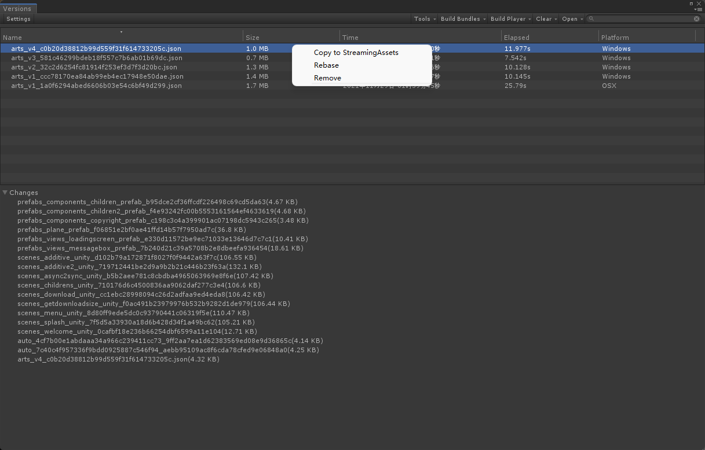
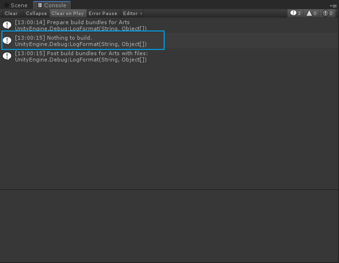
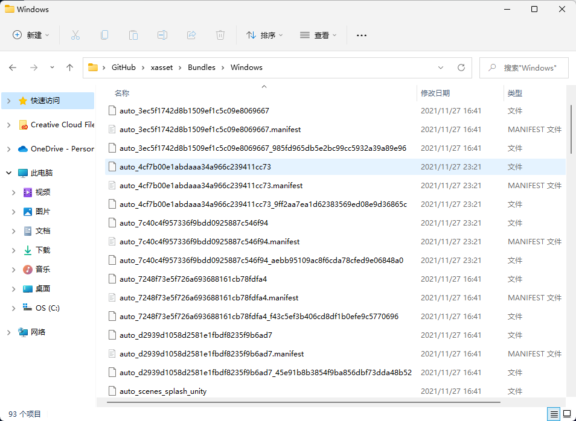

打包指南
打包，其实主要是用来服务：
- 最小化安装大小：Resources 和 ScenesInBuild 中的资源和场景默认都是包含在包体。
- 运行时按需加载：Resources 也可以按需加载但是默认不能热更。
- 补丁或DLC：用户不用安装新的安装包，可以直接从 App 内下载更新。
阅读打包流程，可以快速了解打包的操作步骤。查看分组建议，可以了解如何为自由分配打包粒度。掌握问题原理，可以在处理打包问题的过程少走弯路。
打包流程
如何使用 xasset 打包？请参考以下步骤：
- 使用使用编辑器菜单 Assets/Create/xasset/Group 创建分组配置。
- 将需要在代码中加载的资源或场景配置到创建的分组配置中。
- 使用编辑器菜单 Assets/Create/xasset/Build 创建打包配置。
- 将创建好的分组配置按需分配到打包配置中，可以在编辑中批量需要的分组配置到打包配置的 Groups 属性。
- 打开打包管理工具，点击 Find References 菜单检查打包配置是否存在交叉引用，如果有可以工具输出的结果进行修复。如果没有，可以点击 Build Bundles 菜单为当前的打包配置创建和启动打包任务。
打包任务完成后，如果有更新，打包后的资源会按平台名称（Android/iOS/WebGL/Windows/OSX）输出到工程目录的 Bundles 目录下。同时，打开版本管理工具，可以全面了解各个打包任务最终生成的清单文件名、耗时、日期、大小和变化。如下图：

若是没有更新，则会在控制台输出 Nothing to build. 的日志。如下图：

提示
xasset 使用旧版 Unity 构建管线，默认自带增量打包机制，流程上需要保留上一次的打包数据，曾经也尝试过升级到新的 SBP，但是新版的 SBP 的增量打包耗时和旧版的差距甚大，同样环境下，旧版构建管线可以瞬间处理的任务，新版的 SBP 要耗费第一次打包一半的时间，这不符合 xasset 的快速打包的定位，所以暂时不支持新版的 SBP。
注意事项
- 打包的资源不要放到 Resources 下，否则必然会冗余。
- ScenesInBuild 中默认应该只保留一个场景，而且是一个不带资源的场景，参考示例做就好，否则可能及有可能出现冗余。
- 规划资源目录的时候按加载时机对资源进行文件夹分类处理，可以和 xasset 的机制配合的更默契。
分组建议
分组就是给资源分配包名，如何给资源分配包名？请参考下面这些建议：
- 易变的和不易变的可以分开。
- 运行时同时加载使用（出现的屏幕）的资源打包到一起。
- 同一个图集的图元打包到一起，不然可能会导致严重冗余。
- Prefab、Scene 等带依赖的资源使用按文件打包。
- Shader 可以全部打包到一起。
- UI 贴图可以按目录打包。
不论以何种策略分组，在规划目录的时候，建议，把同时加载的资源放到同一个目录。这里有一些 Unity 官方的建议也可以参考一下：
对于资源打包粒度应该控制到多大为好，可以参考下自动分组文末的提示。
问题原理
Unity 项目打包常见的问题有：
- 打包慢
- 不稳定
- 其他（待补充）
为什么会打包慢？这其中的主要原因是：
- 流程：删除打包数据导致破坏增量机制，另外 Unity 导入资源的设计缺陷，一些操作会触发漫长的等待时间。
- 硬件：请使用好一点的固态硬盘和处理器，可能比加内存条更有效，杀毒软件，尤其系统自带的可以关掉。
- 方案：是否支持分布式打包？新旧构建的技术选型，还有就是一些更智能化的自动处理机制提升产出品质。
一般而言，小项目对打包的效率的需求不会太高，但是如果资源体量过万甚至更多的时候，如果不能对局部内容进行按需打包，一方面会浪费一部分算力耗费更长的大包时间，另外一方面 Unity 构建管线打包不稳定的问题会被放大。于是，针对这种情况，xasset 采用了分布式架构，为有需要的团队提供可以更快更稳定的打包环境。
不稳定主要指的是 Unity 构建管线的不稳定，其主要表现是：
- 同资源在相同平台的不同工程下打包输出的文件版本不一
- 同资源在固定工程删除历史打包数据后再次打包版本不一
为什么会不稳定，可能需要 Unity 的人来解释，不过根据其表现，我们可以使用基于固定工程打包，且不删除历史打包数据的方式，来减少这种不稳定的情况的发生。
不过还没完，Unity 打包 AssetBundle 有个 AppendHashToAssetBundleName 的选项，开启这个选项可以让打包后输出的文件的文件名带有版本信息，但是因为打包不稳定可能会出现包名一致但是内容不一致的情况。这时候就没有办法 100% 避免打包输出的文件上传到 CDN 没有同名缓存的问题。
原本，当文件名带有文件内容的版本信息的时候，这不仅天生可以避免 CND 同名缓存问题可以轻松实现增量部署，而且还能为运行时的版本校验带来更高效和可靠的处理方式。毕竟，当打包后的文件名在每个版本都具有唯一性之后，客户端完全可以直接通过文件名和文件的长度判断文件是否存在，并且不用在运行时额外编码，管理文件的版本状态。从而，一方面，版本校验可以只针对长度比较，跳过内容比较的过程，自然更快。另一方面，不用在运行时反复读写资源的版本状态，只管读取就好，少一次写入就少一次变化，没有变化，自然更稳定。
现在，因为 Unity 可能出现不稳定的构建管线的输出，一些本来理论上非常高效可靠的机制，可能会出现意外，不过不必担心，xasset 已经不相信 Unity 了，而是自己计算打包后输出的文件的内容的 Hash，重新输出生成带文件内容版本信息的文件名，如下图：
